Syntropy: From Cells to Government
Hierarchy and institutions among emergent organisms in a three-dimensional cellular world
November 2026 · github.com/JoshW-dev/syntropy
Abstract
We ask whether beings that are themselves emergent can, through local interactions alone, give rise to hierarchy, and whether that hierarchy can become an institution that outlives the individuals at its top. Syntropy couples two levels in one continuous world. A three-dimensional Life-like cellular automaton, in which a dead cell is born with 7 or 8 of its 26 neighbours alive and a live cell survives with 1 to 5, settles from noise into persistent forms. Each form that keeps its shape for twenty generations comes loose as an organism whose body is exactly its cells. Organisms eat from a regrowing resource field at a rate that scales with mass to the three-quarters power, grow and burn cells to balance their energy, divide by fission, fight, and die. They follow one another by a single rule: maximise the expected logarithm of retained resources, the product of the local odds of prevailing in a fight, the share kept after tribute, a geometric control loss per rank of command, and small attention and distance costs. No rule mentions tribes, ranks, conquest, rebellion, heirs or government. Of {{baselineLevels.Government.of|int}} seeded worlds run for 150 simulated years, {{baselineLevels.Tribes.reached|int}} formed kin chiefdoms, {{baselineLevels.Hierarchy.reached|int}} formed hierarchies that ruled other lineages, and {{baselineLevels.Government.reached|int}} produced a realm whose members regrouped under one new ruler after the old ruler died, at median times of {{baselineLevels.Tribes.medianYear|f1}}, {{baselineLevels.Hierarchy.medianYear|f1}} and {{baselineLevels.Government.medianYear|f1}} simulated years. We define a social syntropy index, the normalised negentropy of the partition of organisms into polities, and use it as an order parameter. Ablations show that one ingredient is necessary: fear, the weight an organism gives to unallied mass nearby. Without it nothing forms, while actual fighting, tribute and kinship change how much order forms but not whether it forms. A phase diagram in fear and tribute shows a sequence of regimes from anarchy to government, with a boundary that a mean-field estimate predicts. Scrambling what the lower level passes up delays the first tribes but leaves the outcome unchanged. Whether a realm survives its ruler depends on how compact it is in space, and not on how concentrated its power was.
Keywords: emergence, cellular automata, agent-based models, dominance hierarchy, state formation, Tullock contests, Kleiber's law, negentropy, succession
1 Introduction
Conway's Game of Life shows that a two-line rule can produce gliders, oscillators and self-sustaining structures that nobody wrote down (Gardner 1970). Its lesson is about levels. The rule speaks only of cells and their neighbours, yet the objects worth watching are patterns many cells wide that behave as units. Biology is a stack of such levels. Molecules form cells, cells form organisms and organisms form societies, and at each step a new kind of individual appears whose parts have given up some independence (Maynard Smith and Szathmáry 1995; Michod 1999). Human societies add a further level with no obvious counterpart in Life: lasting hierarchies in which some individuals command others, and in which the hierarchy can persist when the individuals at its top are replaced (Service 1962; Carneiro 1970; Weber 1922).
This paper connects the two traditions with one question. Can beings that are themselves emergent, assembled from cells by a Life-like rule, interact in ways that produce hierarchy, and can that hierarchy become something that behaves like government, without any rule that refers to hierarchy or government? Models of political hierarchy usually start from agents that are given, such as villages, chiefs or households, and specify a separate rule for each event of interest: conquest, secession, succession (Cederman 1997; Gavrilets, Anderson and Turchin 2010). Models of multi-level emergence in artificial life usually stop at the organism (Turney 2021). We put both in a single continuous world and keep the social rule set as small as we could make it work.
The paper makes five contributions.
- Emergent agents. Every social agent is a structure of a three-dimensional cellular automaton. An organism's body is the set of cells it came from, so its mass, shape, lineage and birthplace are inherited from the lower level, and the hand-off between levels is local and staggered, with no global reset.
- One allegiance rule. A single rule, derived as maximisation of expected log retained resources, produces joining, conquest, secession, regrouping after a ruler's death and the depth of chains of command. There is no separate rule for any of these.
- A test for government that assumes no succession rule. When the ruler of a realm of 30 or more dies we record its members and ask, after a fixed window, whether at least 60% of them follow one new ruler.
- An order parameter, a phase diagram and the necessary ingredient. The social syntropy index Σ, the normalised negentropy of the polity partition; a phase diagram in fear and tribute with a mean-field boundary; and ablations showing that fear of unallied neighbours is the one necessary ingredient.
- A reproducible instrument. An open, deterministic implementation that runs in a web browser, with a headless harness that regenerates every number and figure in this paper (Appendix B).
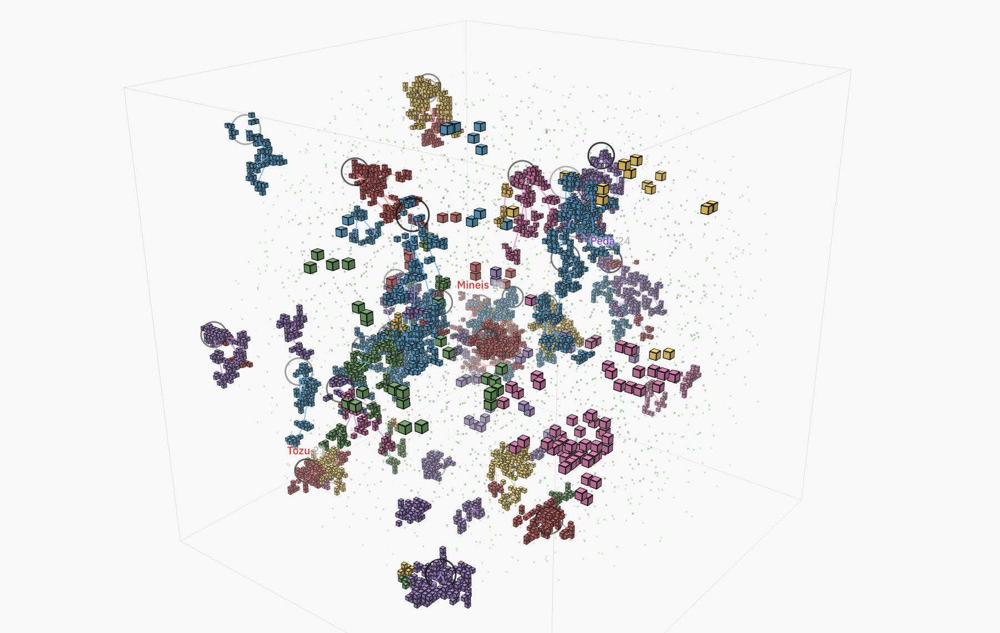
Figure 1. A world at year 45 (seed cedar), shortly after its first government. Each organism is drawn as the cells it came from, filled in its lineage's colour. A line runs from every follower to its lord in the colour of the ruler's lineage, each rank is drawn one step below the rank above it, and a ring marks each ruler. A blue line on a red body means a blue ruler commands it. The larger cubes are lattice cells that never joined a form, and labels name the largest realms and their sizes.
2 Background and related work
2.1 Life in three dimensions
Bays (1987) searched three-dimensional totalistic rules for analogues of Conway's Life and identified rules such as S4-5/B5 that support gliders. Wolfram (1984) classified cellular automata by their long-run behaviour, and Langton (1990) located complex behaviour near the transition between order and chaos. Continuous generalisations such as Lenia produce lifelike morphologies (Chan 2019), learned neural cellular automata grow and repair target shapes (Mordvintsev et al. 2020), and Turney (2021) found that fitness in a symbiotic variant of Life tracks the diversity of multicellular autopoietic structures. We selected our lattice rule for a different property: many separate forms that hold their shape (Section 3.1).
2.2 Levels, holons and transitions
Simon (1962) argued that complex systems tend to be hierarchies of nearly decomposable subsystems, and Koestler (1967) called the unit of each level a holon, a whole that is also a part. The major-transitions programme adds that each transition changes how information passes between generations and how conflict between levels is contained (Maynard Smith and Szathmáry 1995; Michod 1999). Anderson (1972) made the general point that each level obeys laws that are not visible from the level below.
2.3 Dominance hierarchies
Schjelderup-Ebbe (1922) described the pecking order of domestic hens. Chase (1982) showed that hierarchies form through the sequence of interactions as much as through fixed attributes, and Hogeweg and Hesper (1983) reproduced dominance structure from winner and loser effects in a model of bumblebee colonies. Bonabeau, Theraulaz and Deneubourg (1995) found a phase transition between egalitarian and hierarchical states as the strength of that positive feedback varies, and Hemelrijk (1999) showed that despotic and egalitarian primate societies can emerge from the same rules under different intensities of aggression. Nagy et al. (2010) measured leadership hierarchies in pigeon flocks directly from movement. Each of these hierarchies is a ranking of individuals. The hierarchies studied here are trees of command over many individuals, closer to the political case.
2.4 Political hierarchy and the state
Service (1962) proposed an evolutionary sequence of band, tribe, chiefdom and state, and Fried (1967) distinguished egalitarian, ranked and stratified societies. Carneiro's circumscription theory (1970) explains the state as a product of warfare among populations confined to productive land. Hobbes (1651) grounded political authority in an exchange of obedience for protection, and Weber (1922) identified the death of a ruler as the moment personal authority must become an institution or dissolve. Agent-based models include Axelrod's tribute model of new political actors (Axelrod 1997), Cederman's GeoSim (Cederman 1997), Sugarscape (Epstein and Axtell 1996), the chiefdom model of Gavrilets, Anderson and Turchin (2010), whose polities grow by conquest and collapse in cycles, the model of Turchin et al. (2013) for the spread of complex societies across Afro-Eurasia, and recent work that treats hierarchy as directional asymmetry of influence among agents (Mao and Tino 2026). Gavrilets et al. found that well-defined means of succession stabilise large polities. Here no means of succession exists, and we measure when one emerges in effect.
2.5 Order and negentropy
Schrödinger (1944) described life as feeding on negative entropy, and Prigogine and Nicolis (1977) formalised order maintained by flows of energy through open systems. Fantappiè (1942) coined syntropy for a tendency toward order. The simulation borrows the word for a measurable quantity, defined in Section 4.
3 Model
The world is the cube \([-1,1]^3\). Time advances in ticks. The lattice steps once every {{params.ticksPerGen|int}} ticks, and for readability we call 100 ticks a year. Figure 2 summarises the model and Table 1 in the appendix lists every parameter. Each random choice draws from a seeded generator, so a seed reproduces a world exactly, in the browser and in the headless harness alike.
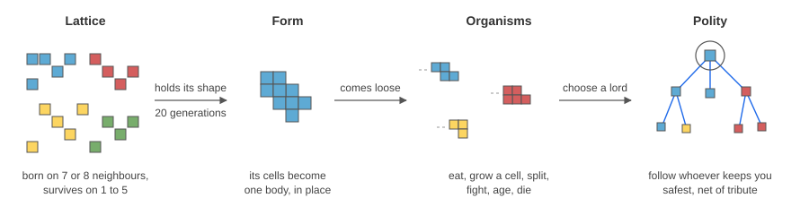
Figure 2. The model in one line. Cells follow a Life-like rule; a form that holds its shape for 20 generations comes loose as one organism made of those cells; organisms eat, grow, divide, fight and die; and each organism follows whoever offers it the most local safety after tribute, which turns the population into trees of command.
3.1 The lattice
The lattice \(\Lambda=\{0,\dots,G-1\}^3\) with \(G={{params.cells.size|int}}\) holds binary cells \(s(x)\), each with a lineage \(\ell(x)\in\{1,\dots,K\}\), \(K={{params.cells.lineages|int}}\). With \(n(x)\) the number of live cells among the 26 Moore neighbours of \(x\),
$$ s_{t+1}(x)=\begin{cases}1 & s_t(x)=1 \text{ and } n_t(x)\in S,\\ 1 & s_t(x)=0 \text{ and } n_t(x)\in B,\\ 0 & \text{otherwise,}\end{cases}\qquad S=\{1,\dots,5\},\; B=\{7,8\}. \label{life}$$A newborn cell takes the most common lineage among its live neighbours, with ties broken uniformly at random:
$$ \ell_{t+1}(x)=\operatorname*{arg\,max}_{k}\,\bigl|\{\,y\in\mathcal N(x):\ s_t(y)=1,\ \ell_t(y)=k\,\}\bigr|. \label{lineage}$$Neighbour counts are computed as a separable \(3\times3\times3\) box sum minus the centre cell, nine additions per cell per generation. A world starts with {{params.cells.sporesPerLineage|int}} small random spores per lineage, scattered around six homelands spaced evenly on a sphere about the centre.
We chose the rule by search rather than by analogy with Conway's. Across 777 combinations of contiguous survival and birth ranges and initial densities, three seeds each on a \(40^3\) lattice, most rules either fused into one connected mass or froze into a few fragments. The rule S1-5/B7-8 left the most separate forms that hold, kept every lineage alive and occupied about one percent of the lattice (Figure 9). On the same test Bays' S4-5/B5 left {{rules.bays.holding|f1}} holding forms against {{rules.chosen.holding|f1}} for ours.
Forms. Every five generations we label the 26-connected components with at least four cells. A component inherits the identity of a component from the previous scan when its centroid moved by less than 2.5 cells and its size changed by less than a factor of two; matched forms accumulate age. A form holds once its age reaches \(h={{params.cells.holdGens|int}}\) generations.
3.2 From forms to bodies
When a form holds, its cells leave the lattice and become one organism. The body is the set of integer offsets \(B_i\subset\mathbb Z^3\) of those cells from their rounded centroid, placed exactly where the form was, and the mass is the cell count \(m_i=|B_i|\). A form larger than a body can hold is cut along its longest axis into several organisms. The organism's tribe is the form's lineage, and nothing else is assigned. The rest of the lattice keeps running, so organisms appear one at a time over roughly the first thirty years while the lattice drains (Figure 3). In the browser each new body starts at the lattice's scale and condenses in place over about two thirds of a second.
3.3 Metabolism, growth and fission
A resource field \(F\) lives on a \(16^3\) grid with capacity \(K(x)=\min\bigl(1,\ f_0+\sum_z A_z e^{-\|x-c_z\|^2/2\sigma^2}\bigr)\), whose centres \(c_z\) are the six lineage homelands. Each lineage therefore starts on its own fertile ground, and lineages meet as they spread. The field regrows as \(F\leftarrow F+\rho\,(K-F)\). Intake and basal cost both scale as \(m^{3/4}\), following Kleiber's law for metabolic rate (Kleiber 1932), and top speed falls as \(m^{-1/4}\):
$$ I_i=\min\!\Bigl(F,\ \eta\,m_i^{3/4}\,\frac{F}{F+F_{1/2}}\Bigr),\qquad C_i=\mu\,m_i^{3/4}\Bigl(1+c_v\frac{\|v_i\|^2}{v_{\max,i}^2}\Bigr),\qquad v_{\max,i}=v_0\Bigl(\frac{8}{m_i}\Bigr)^{1/4}. \label{kleiber}$$
The body follows the energy budget \(E_i\). With a surplus above \(1.15\,g\,m_i\) and \(m_i
Velocities follow \(v\leftarrow\delta v+\alpha a\), clipped at \(v_{\max}\). The steering \(a\) sums separation from neighbours; a step up the food gradient taken by direction and weighted by hunger; cohesion with kin for organisms that follow no one; flight from polities with more than 1.5 times their own polity's mass, and pursuit of much weaker ones when hungry; and soft walls. A follower is held near a distance \(d_f\) from its lord, in any direction, and matches the lord's velocity. Followers of the same lord repel one another in proportion to the square roots of their branch sizes. In the figures and in the browser each follower is drawn one fixed step lower per rank, so a polity reads as an inverted tree; the dynamics never see this offset. An earlier version applied it as a force that held followers below their lord. Realms then climbed to the top of the volume, because followers grazed the food under their ruler and the ruler always found more above, so the offset now lives only in the drawing.
Two organisms of different polities that touch may fight. The probability per tick is \(\phi\,(0.4+\max(h_i,h_j))\), with hunger \(h\in[0,1]\), and is scaled by \(\kappa\) when they share a lineage. Each side's strength is the total mass of its polity within \(R_b\) of the point of contact, and the outcome is a Tullock contest (Tullock 1980):
At \(\gamma=2\) this is the probabilistic counterpart of Lanchester's square law, in which fighting strength grows with the square of numbers (Lanchester 1916); the tuned value \(\gamma={{params.society.gamma|f2}}\) lies slightly above it. The loser loses \(b\) cells, which the winner eats, and a loser left with fewer than three cells dies.
A follower passes a share \(\tau\) of its income to its lord every tick, and a lord's income includes what it receives, so income cascades upward. At steady state a ruler \(r\) collects
from the intake \(I_k\) of everyone in its subtree \(D(r)\), where \(d(k)\) is \(k\)'s depth below \(r\). Tribute decays geometrically with depth, so a deep subordinate adds little to the ruler's income directly. Its value to the ruler is the mass it adds to the polity in fights.
Every \(t_c={{params.society.choiceEvery|int}}\) ticks, and at once after losing a fight, being born or losing its lord, an organism \(i\) chooses whom to follow, or no one. Let \(D(i)\) be \(i\) together with everyone below it, who come along with any choice \(i\) makes, and let
3.4 Movement
3.5 Conflict
3.6 Tribute
3.7 Allegiance: the one social choice
and following \(j\), a member of polity \(P\) at depth \(d_j\) with \(n_j\) direct followers, has
$$ \begin{aligned} U(j)={}&\ln\frac{a_i+M_P}{a_i+M_P+H-H_P}+\ln\!\bigl(1-\tau\,(1-r\,[\ell_i=\ell_j])\bigr)\\ &-\lambda\,(d_j+1)-c_a\,n_j-c_d\,\frac{\|x_j-x_i\|}{R}. \end{aligned} \label{ujoin}$$The current choice receives a small bonus \(\beta\), and the organism picks an option with probability proportional to \(e^{U/T}\). Within one polity all candidate lords offer the same protection, so the remaining terms decide which member to attach to: a shallow one, with few direct followers, nearby.
Derivation
Treat the coming period as a bet. Suppose the organism's side prevails in local conflict with probability \(p\), keeps a share \(q\) of its income after tribute, and receives protection attenuated by a factor \(\theta\) for every link of command above it. Its retained resources are then proportional to \(p\,q\,\theta^{\,d+1}\), and an agent that maximises long-run growth maximises the expected logarithm of that product, which is the Kelly criterion (Kelly 1956):
$$ U=\ln p+\ln q+(d+1)\ln\theta. \label{kelly}$$The first term of \eqref{ujoin} is \(\ln p\), with \(p\) the Tullock odds at \(\gamma=1\) between allied mass and the threat that remains. The second is \(\ln q\), where tribute paid to kin is discounted by relatedness \(r\), as in Hamilton's rule (Hamilton 1964). The third is \((d+1)\ln\theta\) with \(\lambda=-\ln\theta\), the loss of control across levels of a hierarchy described by Williamson (1967). The attention cost follows Graicunas' observation that a superior's relationships grow faster than the number of subordinates (Graicunas 1937), and the distance cost stands for travel and coordination. In words, the rule is Hobbes' bargain written as arithmetic: an organism trades obedience for protection when the protection is worth the price (Hobbes 1651).
3.8 What the model leaves out
No rule names tribes, ranks, chiefs, conquest, rebellion, heirs, succession or government, and no organism remembers anything beyond the loyalty bonus. Conquest happens when an organism that has just lost a fight finds that the winner's polity is now its safest option. Secession happens when a branch's own mass makes independence safer than paying tribute to a ruler whose strength is elsewhere. What follows a ruler's death is every orphaned follower choosing again at the same moment, with no one designated to inherit. The depth of command is set by the balance between control loss, which favours shallow attachment, and attention and distance costs, which spread followers across many lords.
4 Measurement
A polity is a tree of follow links, and its root is the ruler. Polities with five or more members are named realms, and a realm keeps its name while its ruler lives. We read the ladder from these structures. A level is only recognised after the level before it.
| Level | Reached when |
|---|---|
| Cells | The lattice starts alive. |
| Organisms | The first form holds for {{params.cells.holdGens|int}} generations and comes loose. |
| Tribes | At least {{params.society.tribeCount|int}} polities of {{params.society.tribeMin|int}} or more in which at least {{params.society.tribeKin|pct}} share the ruler's lineage. |
| Hierarchy | A realm of {{params.society.hierSize|int}} or more, at least {{params.society.hierDepth|int}} links deep, with at least {{params.society.hierForeign|pct}} of its members from other lineages than the ruler's. |
| Government | The succession test (below) passes for a realm of {{params.society.govSize|int}} or more. |
The succession test. When the ruler of a realm with at least {{params.society.govSize|int}} members dies, we record those members. After \(W={{params.society.govWindow|int}}\) ticks we find the largest group of them that shares one root. If that group holds at least {{params.society.govKeep|pct}} of the recorded members, and its root does not already head another realm, the realm survives and its name passes to the new root. Otherwise the realm is recorded as broken or absorbed. The test asks Weber's question directly: did the collective outlast the person?
Syntropy. For \(N\) organisms partitioned into polities, where an organism that follows no one and leads no one is a polity of one,
$$ \Sigma=1-\frac{H(\pi)}{\ln N},\qquad H(\pi)=-\sum_P\frac{|P|}{N}\ln\frac{|P|}{N}. \label{syntropy}$$\(\Sigma=0\) when everyone stands alone and \(\Sigma=1\) when one polity holds everyone. The quantity \(\ln N-H(\pi)\) is the negentropy of the partition (Shannon 1948; Brillouin 1953), so \(\Sigma\) is the share of the maximum possible disorder that the social level has given up. Alongside it we track the share of organisms inside major realms (15 or more members), the share inside the largest realm, the deepest chain of command and the energy stored per cell at each rank.
5 Tuning and experiments
Tuning. We did not assume a parameter regime; we searched for one. A score rewards worlds in which every level appears in order at a pace a viewer can follow (Tribes near 600 to 2,000 ticks, Hierarchy near 1,500 to 3,600, Government near 2,700 to 6,000), several major realms coexist and hold most of the population, chains of command stay within about a dozen ranks, and some conquest, secession and collapse occur. A random search over 27 parameters (200 sets, six seeds each) was followed by three rounds of local refinement around the best sets, a second refinement that added the depth term, and a confirmation on 16 seeds that the search never used. The search ran with the earlier movement rule of Section 3.4. When we removed its offset, realms bunched around their rulers, grazed a smaller volume and settled near 300 organisms instead of 450, so we widened the follow distance \(d_f\) from 0.030 to 0.036, which restored the earlier population on 24 test worlds. Every other tuned value is unchanged, and all results below use the final rule. This is a deliberate selection, and it shapes what the results can claim. They show that a region of parameter space exists in which these structures emerge from the rules of Section 3, and they measure how large that region is and which ingredients it needs. They do not show that every parameter setting produces government.
Experiments. E1 runs 48 worlds for 15,000 ticks each with the tuned parameters. E2 runs eleven conditions on 32 worlds for 12,000 ticks, each switching off one ingredient, weakening fear, or scrambling what the lattice passes up. E3 crosses nine values of the fear weight \(\omega\in[0,1.4]\) with seven tribute rates \(\tau\in[0,0.9]\), and separately seven tribute rates with six fight rates \(\phi\in[0,0.12]\), ten worlds per cell and 120 years each. E4 scores 222 lattice rules. Proportions carry 95% Wilson intervals (Wilson 1927). Seeds differ between experiments, and E2 and E3 never reuse the tuning seeds.
6 Results
6.1 A continuous hand-off from cells to organisms
The lattice peaks within a few generations as the spores react, then drains as held forms come loose (Figure 3). In the median world the first organism appeared in year {{baselineLevels.Organisms.medianYear|f1}}, and over the following decades {{events.spawned|int}} forms came loose as organisms, while fission added {{events.births|int}} more. Because the hand-off happens form by form, the cell level and the organism level overlap for about thirty years, and no frame of the simulation marks a boundary between them.
6.2 The ladder across worlds
Figure 4 shows the share of worlds that had reached each level by each year. Tribes appeared in {{baselineLevels.Tribes.reached|int}} of {{baselineLevels.Tribes.of|int}} worlds (median year {{baselineLevels.Tribes.medianYear|f1}}), multi-lineage hierarchies in {{baselineLevels.Hierarchy.reached|int}} (median year {{baselineLevels.Hierarchy.medianYear|f1}}, interquartile range {{baselineLevels.Hierarchy.q25|f1}} to {{baselineLevels.Hierarchy.q75|f1}}), and government in {{baselineLevels.Government.reached|int}} (median year {{baselineLevels.Government.medianYear|f1}}, 95% interval for the share {{baselineLevels.Government.ci95.0|pct}} to {{baselineLevels.Government.ci95.1|pct}}). At the browser's default speed of 60 ticks per second, the median world reaches government a little under a minute after the first organism appears.
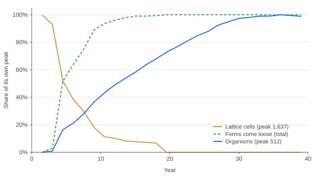
Figure 3. The hand-off between levels, medians across 48 worlds, each curve scaled to its own peak. Live lattice cells (gold) fall as forms come loose (green, cumulative), and the organism population (blue) grows by detachment and then by fission.
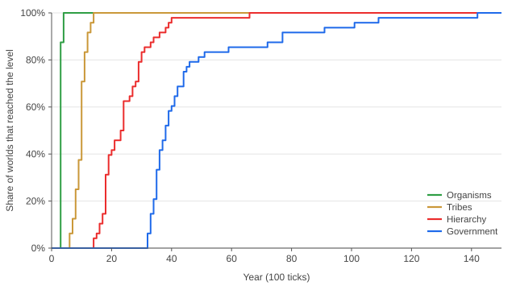
Figure 4. Share of 48 worlds that had reached each level by a given year. Levels are recognised only in order, so each curve lies below the one before it.
6.3 Order through time
Syntropy rises as organisms consolidate and then fluctuates around a level well below one (Figure 5). Over the second half of the runs the median world had \(\Sigma={{baselineLate.syntropyMedian|f2}}\), with {{baselineLate.organizedMedian|pct}} of organisms inside major realms, {{baselineLate.largestMedian|pct}} inside the largest realm and a median of {{baselineLate.realmsMedian|f1}} major realms. The population settled near {{baselineLate.popMedian|int}} organisms with a mean body of {{baselineLate.massMedian|f1}} cells. No world collapsed into a single empire, and none stayed anarchic. Realms keep rising and falling, which is what holds \(\Sigma\) in the middle of its range.
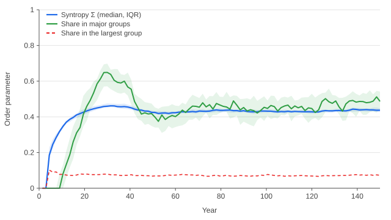
Figure 5. Order parameters through time: the syntropy index Σ (blue, median and interquartile band), the share of organisms in major realms (green) and the share in the largest realm (red, dashed). 48 worlds.
6.4 Which ingredients are necessary
Table 4 switches off one ingredient at a time on 32 worlds each. Two ingredients are necessary. Without the allegiance choice no polity ever forms, and every organism fights every other one it touches. Without fear, the weight \(\omega\) on unallied mass in \eqref{uindep} and \eqref{ujoin}, the result is the same: an organism that fears no one has no reason to pay tribute to anyone, and the world stays anarchic. With half the fear (\(\omega=0.5\)) tribes and hierarchies still form in every world, but government appears in only {{ablations.8.government|pct}} of them and about twice as late, with less order and four times as many fights, because organisms stay independent longer and collide.
Everything else is optional for the ladder. With fights switched off entirely there are no conquests at all, yet the median world still reaches government in year {{ablations.2.tGov|f1}}, against {{ablations.0.tGov|f1}} for the full model. Its hierarchies are built entirely from voluntary submission to whoever is strongest nearby. Hobbes made the same observation about the state of nature, that war “consisteth not in Battell onely, or the act of fighting” (Hobbes 1651), and in the language of international relations this is the security dilemma: each actor's strength is a threat to its neighbours whatever its intentions (Herz 1950; Jervis 1978). Removing tribute, kin preference or control loss changes how much order forms rather than whether it forms. Without control loss chains of command grow to a median of {{ablations.5.maxDepth|int}} ranks and the largest realm holds {{ablations.5.largest|pct}} of the population, against {{ablations.0.maxDepth|int}} ranks and {{ablations.0.largest|pct}} with it.
| Condition | Tribes | Hier. | Gov. | Σ | Depth | Fights | Gov. year |
|---|---|---|---|---|---|---|---|
| Full model | {{ablations.0.tribes|pct}} | {{ablations.0.hierarchy|pct}} | {{ablations.0.government|pct}} | {{ablations.0.syntropy|f2}} | {{ablations.0.maxDepth|int}} | {{ablations.0.fights|int}} | {{ablations.0.tGov|f1}} |
| No tribute (\(\tau=0\)) | {{ablations.1.tribes|pct}} | {{ablations.1.hierarchy|pct}} | {{ablations.1.government|pct}} | {{ablations.1.syntropy|f2}} | {{ablations.1.maxDepth|int}} | {{ablations.1.fights|int}} | {{ablations.1.tGov|f1}} |
| No fights (\(\phi=0\)) | {{ablations.2.tribes|pct}} | {{ablations.2.hierarchy|pct}} | {{ablations.2.government|pct}} | {{ablations.2.syntropy|f2}} | {{ablations.2.maxDepth|int}} | {{ablations.2.fights|int}} | {{ablations.2.tGov|f1}} |
| No kin preference (\(\kappa=1, r=0\)) | {{ablations.3.tribes|pct}} | {{ablations.3.hierarchy|pct}} | {{ablations.3.government|pct}} | {{ablations.3.syntropy|f2}} | {{ablations.3.maxDepth|int}} | {{ablations.3.fights|int}} | {{ablations.3.tGov|f1}} |
| Food away from homelands | {{ablations.4.tribes|pct}} | {{ablations.4.hierarchy|pct}} | {{ablations.4.government|pct}} | {{ablations.4.syntropy|f2}} | {{ablations.4.maxDepth|int}} | {{ablations.4.fights|int}} | {{ablations.4.tGov|f1}} |
| No control loss (\(\lambda=0\)) | {{ablations.5.tribes|pct}} | {{ablations.5.hierarchy|pct}} | {{ablations.5.government|pct}} | {{ablations.5.syntropy|f2}} | {{ablations.5.maxDepth|int}} | {{ablations.5.fights|int}} | {{ablations.5.tGov|f1}} |
| No allegiance choice | {{ablations.6.tribes|pct}} | {{ablations.6.hierarchy|pct}} | {{ablations.6.government|pct}} | {{ablations.6.syntropy|f2}} | {{ablations.6.maxDepth|int}} | {{ablations.6.fights|int}} | never |
| No fear (\(\omega=0\)) | {{ablations.7.tribes|pct}} | {{ablations.7.hierarchy|pct}} | {{ablations.7.government|pct}} | {{ablations.7.syntropy|f2}} | {{ablations.7.maxDepth|int}} | {{ablations.7.fights|int}} | never |
| Half fear (\(\omega=0.5\)) | {{ablations.8.tribes|pct}} | {{ablations.8.hierarchy|pct}} | {{ablations.8.government|pct}} | {{ablations.8.syntropy|f2}} | {{ablations.8.maxDepth|int}} | {{ablations.8.fights|int}} | {{ablations.8.tGov|f1}} |
| Shuffled lineages | {{ablations.9.tribes|pct}} | {{ablations.9.hierarchy|pct}} | {{ablations.9.government|pct}} | {{ablations.9.syntropy|f2}} | {{ablations.9.maxDepth|int}} | {{ablations.9.fights|int}} | {{ablations.9.tGov|f1}} |
| Scattered founders | {{ablations.10.tribes|pct}} | {{ablations.10.hierarchy|pct}} | {{ablations.10.government|pct}} | {{ablations.10.syntropy|f2}} | {{ablations.10.maxDepth|int}} | {{ablations.10.fights|int}} | {{ablations.10.tGov|f1}} |
6.5 A phase diagram in fear and tribute
Fear and tribute pull in opposite directions. Fear makes standing alone expensive, and tribute makes joining expensive. Crossing nine values of \(\omega\) with seven tribute rates, ten worlds per cell, gives the phase diagram in Figure 6. At \(\omega=0\) nothing forms at any tribute rate. As fear rises the world passes through four regimes: anarchy, kin chiefdoms only, hierarchies without government, and government. The boundary of each moves to higher tribute as fear grows. At the tuned fear \(\omega=1\) government appears in nine or ten of every ten worlds up to \(\tau=0.6\), in {{phaseFear.gov.7.5|pct}} of them at \(\tau=0.75\) and in none at \(\tau=0.9\), and syntropy falls steadily with tribute at every level of fear.
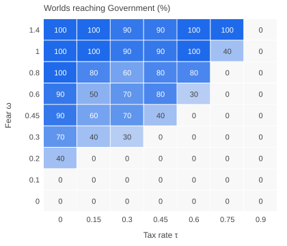
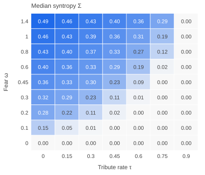
Figure 6. Phase diagram over fear \(\omega\) and tribute \(\tau\), ten worlds per cell, 120 years each. Left: percentage of worlds that reached government. Right: median syntropy over the second half. The tuned model sits at \(\omega=1\), \(\tau={{params.society.tribute|f2}}\).
A mean-field estimate locates the first boundary. Consider an organism of allied mass \(a\) next to one polity of mass \(M=\rho\,a\) and nothing else. Standing alone it prevails with probability \(1/(1+\omega\rho)\), and joining that polity removes the threat entirely, so it joins when
$$ \ln(1+\omega\rho)\;>\;-\ln(1-\tau)+\lambda \quad\Longleftrightarrow\quad \tau<\tau^*(\omega)=1-\frac{e^{\lambda}}{1+\omega\rho}. \label{boundary}$$With neighbours about three times one's own mass (\(\rho\approx3\)) and the tuned \(\lambda\), this gives \(\tau^*\approx0.17\) at \(\omega=0.1\), 0.33 at \(\omega=0.2\) and 0.73 at \(\omega=1\). The simulated boundary of the Tribes level lies at 0.15, 0.45 and 0.75, close to the estimate given how crude it is. The deeper levels need more than one organism to join one neighbour, so their boundaries sit further inside the region.
The secondary grid of tribute against the fight rate \(\phi\in[0,0.12]\) (not shown) confirms the ablation. Hierarchies appear in nearly every world in every cell, and syntropy falls with tribute but hardly changes with the fight rate. Government is less regular: most cells reach it in eight or more of their ten worlds, but a few interior cells fall well below that, with no trend in the fight rate.
6.6 What survives a ruler's death
Across the 48 worlds, {{succession.n|int}} rulers of realms with 20 or more members died, and {{succession.survived|int}} of those realms passed the succession test. We expected the outcome to depend on how concentrated power was when the ruler died, since a dominant branch would seem to give the orphans an obvious place to converge. It does not. The survival rate is close to flat across the share of the realm held by its largest direct branch, from about a fifth to nearly all of it (Figure 7, left). What predicts survival is geometry. Realms whose members sat within 0.8 perception radii of their centre on average passed the test {{succession.bySpread.1.rate|pct}} of the time, against {{succession.bySpread.2.rate|pct}} for realms spread to between 0.8 and 1.2 radii, and almost no realm spread wider (Figure 7, right).
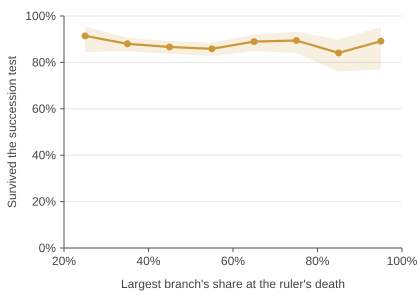
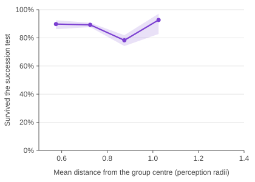
Figure 7. Survival of the succession test for realms of 20 or more, with 95% Wilson bands, binned by the largest direct branch's share of the realm at the ruler's death (left) and by the realm's mean distance from its centre in perception radii (right). Bins with fewer than ten successions are omitted.
The mechanism follows from the allegiance rule. At the moment of death every orphan evaluates the same thing: the mass of each neighbouring branch, as protection if it joins and as threat if it does not. In a compact realm every orphan sees nearly every branch, so their evaluations agree and they converge on one polity whatever its share. In a dispersed realm each orphan sees a different neighbourhood, the evaluations disagree, and the realm divides along the lines of who could see whom. In this model the institution that survives the ruler's death is spatial cohesion, and power concentration adds nothing to it.
The government threshold is an observer's choice, so Table 3 reports the share of successions in realms of 30 or more that would pass at other thresholds. The ladder's Government level is reached in a world when one succession passes, so its timing is insensitive to the threshold over this range; the share of successions that pass is not.
| Kept at least | 50% | 60% (used) | 70% | 80% | 90% |
|---|---|---|---|---|---|
| Share of successions | {{thresholds.0.share|pct}} | {{thresholds.1.share|pct}} | {{thresholds.2.share|pct}} | {{thresholds.3.share|pct}} | {{thresholds.4.share|pct}} |
6.7 Size, rank and inequality
At the end of the baseline runs the {{sizes.n|int}} standing realms had a median size of {{sizes.median|int}} organisms, a 90th percentile of {{sizes.p90|int}} and a largest of {{sizes.max|int}} (Figure 8, left). The distribution is skewed but bends downward on logarithmic axes, so the largest realms are bounded rather than scale-free. That is the signature of the two brakes in Section 7.1: a realm cannot protect members beyond its perception radius, and control loss taxes every rank.
Stored energy is stratified by rank, but only mildly (Figure 8, right). Rulers held a median of {{rankEnergy.0.median|f2}} units of energy per cell against {{rankEnergy.1.median|f2}} for their direct followers and {{rankEnergy.3.median|f2}} three ranks down. The gradient is shallow because the tuned tribute rate is low (\(\tau={{params.society.tribute|f2}}\)) and because rulers convert surplus into cells and offspring rather than storing it: by \eqref{cascade} tribute ends up as fission, and fission adds kin to the realm.
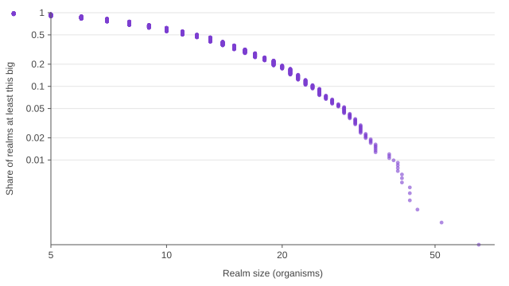
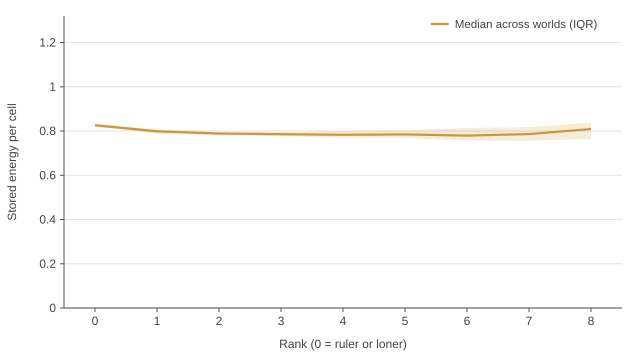
Figure 8. Left: share of realms at least a given size, pooled over the final states of 48 worlds, on logarithmic axes. Right: stored energy per cell by rank of command, median across worlds with the interquartile band; rank 0 is a ruler or an organism that follows no one.
6.8 Does the lower level matter?
Three controls scramble what the lattice passes up while keeping the bodies and their timing. Shuffling lineages gives each form a random lineage, scattering founders drops each form at a random place, and moving the food puts the fertile zones away from the homelands. None of them stops the ladder, and none changes the second-half syntropy or depth by more than sampling noise (Table 4). They do change its early timing. Tribes appear in year {{ablations.9.tTribes|f1}} with shuffled lineages and year {{ablations.10.tTribes|f1}} with scattered founders, against {{ablations.0.tTribes|f1}} when forms keep the place and lineage the lattice gave them, because the lattice delivers kin already clustered.
The answer is partly negative, and the negative part is informative. The lattice gives each organism its body (mass, shape, the moment it appears) and gives the population its first geography, and those matter for the first decade. The social level then forgets them. The endpoint depends on the social rule and on two numbers, fear and tribute, and not on the details of how its agents were assembled. Physicists call this universality: different microscopic rules flow to the same large-scale behaviour.
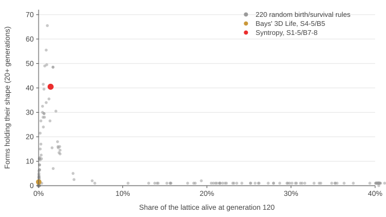
Figure 9. The lattice-rule search: for each of 222 birth and survival rules, the number of forms holding their shape at generation 120 against the share of the lattice alive, averaged over two seeds on a \(40^3\) lattice. Most rules leave nothing that holds or fill the lattice. Syntropy's rule (red) leaves {{rules.chosen.holding|f1}} holding forms while filling {{rules.chosen.fill|pct1}} of the lattice; Bays' three-dimensional Life (gold) leaves {{rules.bays.holding|f1}}.
7 Discussion
7.1 Fear is the engine; everything else shapes
The ablations single out one ingredient. Organisms gather into polities because unallied mass nearby is a threat, and joining the strongest neighbour is the cheapest way to make it go away. A polity that grows becomes the safest option for the organisms around it, so it grows further. This is the positive feedback that Bonabeau, Theraulaz and Deneubourg (1995) identified in dominance hierarchies, acting here on polities, and it needs no fights to run: perceived threat is enough. Fights, tribute and kinship modulate it. Fights move cells from losers to winners, and removing them leaves the timing of government almost where it was (year {{ablations.0.tGov|f1}} with fights, year {{ablations.2.tGov|f1}} without). Tribute makes joining costly and so lowers syntropy, while also feeding rulers, who convert it into fission and therefore into more members (Section 3.6). Kinship softens threat and tax inside a lineage and so shapes who joins whom.
Two brakes keep the feedback from producing one empire. Protection is counted only within the perception radius, so a realm cannot protect, and therefore cannot hold, members far from its mass. Control loss taxes every rank, so long chains stop being worth joining. Removing control loss lets chains run to a median of {{ablations.5.maxDepth|int}} ranks and raises the largest realm's share, which confirms that it is the brake on depth. The balance between feedback and brakes produces many realms of moderate size, rising and falling, and keeps Σ in the middle of its range.
7.2 Government without an heir
When a ruler dies the model does nothing special. Its direct followers find themselves at the roots of separate polities standing next to one another, each followed by its own branch. At their next choice each orphan weighs the mass of every branch it can see, as protection if it joins and as threat if it does not, with kinship softening both. Weber described the death of a ruler as the crisis in which authority either becomes an institution or dissolves (Weber 1922). In this model the crisis is settled by how the realm was arranged in space at the moment of death. In a compact realm every orphan sees the same branches, their choices agree and the realm reforms around one of them. In a dispersed realm the orphans see different neighbourhoods and the realm splits along the lines of who could see whom (Section 6.6). Cohesion in space does the work that succession law, legitimacy and loyalty do in human states, and nothing in the model had to be added for it.
7.3 Relation to theories of the state
The trajectory of a typical world follows the anthropological sequence of band, tribe, chiefdom and state (Service 1962) without encoding it. While lineages occupy separate homelands, the only threats are kin, whose threat is discounted, and organisms gather into kin-led polities. When populations grow into one another, threats come from strangers and the safest option is often a stronger stranger, which produces hierarchies that rule other lineages. This is Carneiro's circumscription argument reduced to its ingredients: productive land, growth and the cost of standing alone among neighbours who are stronger (Carneiro 1970). The allegiance rule itself is Hobbes' social contract made local and continuous, since every organism renews its contract every few seconds and may move it to another sovereign (Hobbes 1651). Rulers store more energy per cell than their subjects (Section 6.7), but the gradient is shallow, closer to Fried's ranked societies, where status is unequal and wealth nearly equal, than to his stratified ones (Fried 1967).
7.4 Assumptions and limitations
We list the assumptions that most affect what the results can claim.
- Selected parameters. The parameters were chosen by search for worlds in which the phenomena appear (Section 5). The results establish that such a region exists and measure its size and dependencies. They do not establish that hierarchy or government is generic across all settings, and the phase diagram shows regions where neither appears.
- A selected lattice rule. The lattice rule was chosen for producing many forms that hold. Most rules produce no organisms at all, either because nothing holds or because everything fuses.
- Fertile homelands. Food capacity is centred on the six lineage homelands, coupling the geography of the social level to the lower level. Section 6.8 measures what happens when the zones are placed at random.
- Homogeneous, non-learning agents. Every organism uses the same rule with the same parameters. Heterogeneity comes only from mass, lineage, position, age and history. There is no learning, memory beyond loyalty, or evolution of strategies; selection acts only through differential survival and fission.
- Myopic choice. Each organism estimates its options from the current positions of its neighbours and does not anticipate their choices. The rule is a best response to a snapshot. It is not an equilibrium of a game.
- Coarse kinship. Kinship is shared lineage, so relatedness is binary and constant. Real relatedness is graded and decays with genealogical distance.
- Simple economics and war. Tribute is a fixed rate for every lord, with no bargaining, competition between rulers on tax, or redistribution. A fight is decided by local mass alone, with no technology, terrain, fatigue or alliances between polities.
- Observer-defined levels. The thresholds in Table 2 are choices of the observer. They do not act on the simulation, and Section 6.6 reports how the share of successions counted as government varies with the threshold.
- Scale. Worlds hold a few hundred organisms ({{baselineLate.popMedian|int}} in the median world's second half) in a small cube. We have not tested how the results scale with the size of the world.
- Determinism. A seed reproduces a world exactly within one JavaScript engine. Different engines can round transcendental functions differently and diverge over long runs.
7.5 What is new
Each ingredient has precedents: Life-like rules in three dimensions (Bays 1987), positive feedback in dominance hierarchies (Bonabeau et al. 1995), conquest and tribute in models of chiefdoms (Gavrilets et al. 2010), and protection in exchange for obedience (Hobbes 1651). To our knowledge three things are new. First, the agents of the social level are not given: they are persistent structures of a cellular automaton, and they inherit their bodies, lineages and places from it in a continuous hand-off. Second, a single choice rule, derived from one objective, produces the political transitions that earlier models specify separately. Third, government is measured with a test that does not presuppose any succession mechanism, which lets us ask what makes a realm outlive its ruler instead of building the answer in.
8 Conclusion
The question in the introduction has an affirmative answer within this model. Beings that emerge from cells, and that follow one local rule about whom to follow, form kin groups, then hierarchies that rule other lineages, and then realms that regroup under a new ruler when the old one dies, at a predictable pace and in most worlds of a tuned region of parameter space. The order they build is partial and alive: syntropy rises and then fluctuates as realms form, conquer, break and regroup. The simulation runs in a browser, and every number and figure in this paper can be regenerated from the repository.
References
- Anderson, P. W. (1972). More is different. Science, 177(4047), 393–396.
- Axelrod, R. (1997). The Complexity of Cooperation: Agent-Based Models of Competition and Collaboration. Princeton University Press.
- Bays, C. (1987). Candidates for the Game of Life in three dimensions. Complex Systems, 1(3), 373–400.
- Bonabeau, E., Theraulaz, G., & Deneubourg, J.-L. (1995). Phase diagram of a model of self-organizing hierarchies. Physica A, 217(3), 373–392.
- Brillouin, L. (1953). The negentropy principle of information. Journal of Applied Physics, 24(9), 1152–1163.
- Carneiro, R. L. (1970). A theory of the origin of the state. Science, 169(3947), 733–738.
- Cederman, L.-E. (1997). Emergent Actors in World Politics: How States and Nations Develop and Dissolve. Princeton University Press.
- Chan, B. W.-C. (2019). Lenia: Biology of artificial life. Complex Systems, 28(3), 251–286.
- Chase, I. D. (1982). Dynamics of hierarchy formation: the sequential development of dominance relationships. Behaviour, 80(3–4), 218–240.
- Epstein, J. M., & Axtell, R. (1996). Growing Artificial Societies: Social Science from the Bottom Up. Brookings Institution Press and MIT Press.
- Fantappiè, L. (1942). Principi di una teoria unitaria del mondo fisico e biologico. Humanitas Nova.
- Fried, M. H. (1967). The Evolution of Political Society. Random House.
- Gardner, M. (1970). Mathematical games: The fantastic combinations of John Conway's new solitaire game “life”. Scientific American, 223(4), 120–123.
- Gavrilets, S., Anderson, D. G., & Turchin, P. (2010). Cycling in the complexity of early societies. Cliodynamics, 1(1), 58–80.
- Graicunas, V. A. (1937). Relationship in organization. In L. Gulick & L. Urwick (Eds.), Papers on the Science of Administration (pp. 181–187). Institute of Public Administration.
- Hamilton, W. D. (1964). The genetical evolution of social behaviour. I. Journal of Theoretical Biology, 7(1), 1–16.
- Hemelrijk, C. K. (1999). An individual-orientated model of the emergence of despotic and egalitarian societies. Proceedings of the Royal Society B, 266(1417), 361–369.
- Herz, J. H. (1950). Idealist internationalism and the security dilemma. World Politics, 2(2), 157–180.
- Hobbes, T. (1651). Leviathan. Andrew Crooke.
- Hogeweg, P., & Hesper, B. (1983). The ontogeny of the interaction structure in bumble bee colonies: a MIRROR model. Behavioral Ecology and Sociobiology, 12(4), 271–283.
- Jervis, R. (1978). Cooperation under the security dilemma. World Politics, 30(2), 167–214.
- Kelly, J. L. (1956). A new interpretation of information rate. Bell System Technical Journal, 35(4), 917–926.
- Kleiber, M. (1932). Body size and metabolism. Hilgardia, 6(11), 315–353.
- Koestler, A. (1967). The Ghost in the Machine. Hutchinson.
- Lanchester, F. W. (1916). Aircraft in Warfare: The Dawn of the Fourth Arm. Constable.
- Langton, C. G. (1990). Computation at the edge of chaos: Phase transitions and emergent computation. Physica D, 42(1–3), 12–37.
- Mao, S., & Tino, P. (2026). From cooperation to hierarchy: A study of dynamics of hierarchy emergence in a multi-agent system. arXiv:2602.21404.
- Maynard Smith, J., & Szathmáry, E. (1995). The Major Transitions in Evolution. W. H. Freeman.
- Michod, R. E. (1999). Darwinian Dynamics: Evolutionary Transitions in Fitness and Individuality. Princeton University Press.
- Mordvintsev, A., Randazzo, E., Niklasson, E., & Levin, M. (2020). Growing neural cellular automata. Distill, 5(2), e23.
- Nagy, M., Ákos, Z., Biro, D., & Vicsek, T. (2010). Hierarchical group dynamics in pigeon flocks. Nature, 464(7290), 890–893.
- Prigogine, I., & Nicolis, G. (1977). Self-Organization in Nonequilibrium Systems. Wiley.
- Schjelderup-Ebbe, T. (1922). Beiträge zur Sozialpsychologie des Haushuhns. Zeitschrift für Psychologie, 88, 225–252.
- Schrödinger, E. (1944). What Is Life? Cambridge University Press.
- Service, E. R. (1962). Primitive Social Organization: An Evolutionary Perspective. Random House.
- Shannon, C. E. (1948). A mathematical theory of communication. Bell System Technical Journal, 27(3), 379–423.
- Simon, H. A. (1962). The architecture of complexity. Proceedings of the American Philosophical Society, 106(6), 467–482.
- Tullock, G. (1980). Efficient rent seeking. In J. M. Buchanan, R. D. Tollison, & G. Tullock (Eds.), Toward a Theory of the Rent-Seeking Society (pp. 97–112). Texas A&M University Press.
- Turchin, P., Currie, T. E., Turner, E. A. L., & Gavrilets, S. (2013). War, space, and the evolution of Old World complex societies. PNAS, 110(41), 16384–16389.
- Turney, P. D. (2021). Evolution of autopoiesis and multicellularity in the Game of Life. Artificial Life, 27(1), 26–43.
- Weber, M. (1922). Wirtschaft und Gesellschaft. Mohr. English edition: Economy and Society, University of California Press, 1978.
- Williamson, O. E. (1967). Hierarchical control and optimum firm size. Journal of Political Economy, 75(2), 123–138.
- Wilson, E. B. (1927). Probable inference, the law of succession, and statistical inference. Journal of the American Statistical Association, 22(158), 209–212.
- Wolfram, S. (1984). Universality and complexity in cellular automata. Physica D, 10(1–2), 1–35.
Appendix A Parameters
| Symbol | Meaning | Value |
|---|---|---|
| \(G,\ K\) | Lattice side in cells, number of lineages | {{params.cells.size|int}}, {{params.cells.lineages|int}} |
| \(S,\ B\) | Survival and birth counts of 26 neighbours | {{params.cells.sMin|int}} to {{params.cells.sMax|int}}, {{params.cells.bMin|int}} or {{params.cells.bMax|int}} |
| \(h\) | Generations a form must hold | {{params.cells.holdGens|int}} |
| Ticks per lattice generation | {{params.ticksPerGen|int}} | |
| \(m_{\min},\ m_\text{split}\) | Smallest viable body, mass at fission* | {{params.society.minMass|int}}, {{params.society.splitMass|int}} |
| \(\eta,\ \mu\) | Intake and basal cost coefficients* | {{params.society.harvestRate|f4}}, {{params.society.metabolism|f4}} |
| \(F_{1/2}\) | Food level for half-maximal intake | {{params.society.harvestHalf|f2}} |
| \(c,\ g,\ s\) | Cell cost, growth and fission thresholds per cell* | {{params.society.cellCost|f2}}, {{params.society.growAt|f2}}, {{params.society.splitAt|f2}} |
| \(\bar L\) | Mean lifespan* | {{params.society.lifespan|int}} |
| \(\sigma,\ f_0,\ \rho\) | Fertile zone width, base capacity, regrowth rate* | {{params.society.zoneSigma|f2}}, {{params.society.foodBase|f2}}, {{params.society.regrow|f3}} |
| \(v_0,\ R\) | Top speed at 8 cells, perception radius | {{params.society.maxSpeed|f4}}, {{params.society.senseRadius|f2}} |
| \(d_f\) | Follow distance from a lord | {{params.society.followDist|f3}} |
| \(\phi,\ \kappa\) | Fight rate, kin factor on fights and threat* | {{params.society.fightChance|f3}}, {{params.society.kinPeace|f2}} |
| \(\gamma,\ b,\ R_b\) | Tullock exponent*, cells lost per defeat*, battle radius | {{params.society.gamma|f2}}, {{params.society.bite|int}}, {{params.society.battleRadius|f2}} |
| \(\tau,\ r\) | Tribute rate, kin relatedness discount* | {{params.society.tribute|f3}}, {{params.society.kinShare|f2}} |
| \(\lambda,\ c_a,\ c_d\) | Control loss per rank, attention and distance costs* | {{params.society.controlLoss|f3}}, {{params.society.attention|f3}}, {{params.society.distanceCost|f3}} |
| \(\beta,\ t_c,\ T\) | Loyalty bonus, choice interval, softmax temperature* | {{params.society.loyalty|f3}}, {{params.society.choiceEvery|int}}, {{params.society.temperature|f3}} |
The search set the attention cost \(c_a\) to zero, so in the tuned model the depth of command is set by control loss and distance alone. We keep the term in \eqref{ujoin} because it is part of the rule family and is non-zero elsewhere in the searched space.
Appendix B Reproducing this paper
The repository holds the simulation (src/sim), the browser front end and every script behind the results. npm run world -- --seed cedar prints one world's chronicle, and npm run sweep repeats the parameter search. npm run experiments regenerates E1 to E4 in about fifteen minutes on 16 threads, npm run figures draws the figures and writes the summary numbers, and npm run paper rebuilds this document from them.